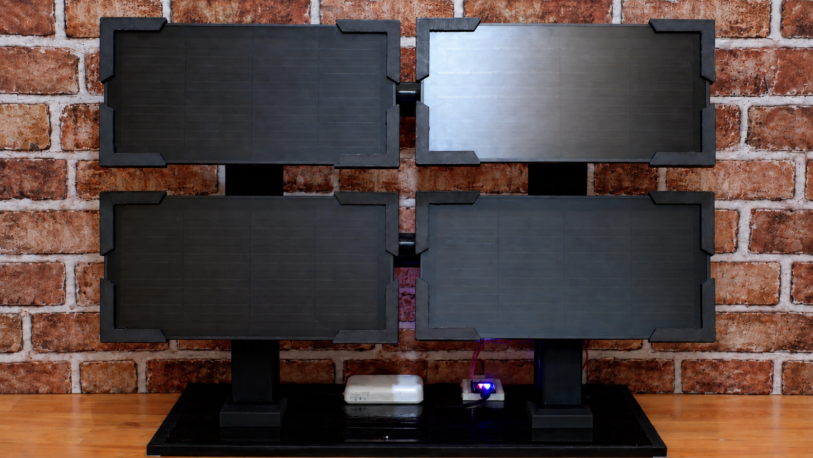
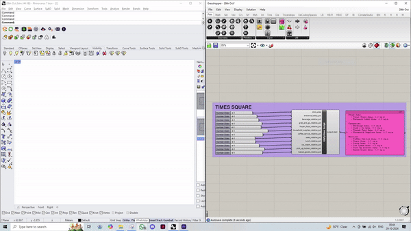
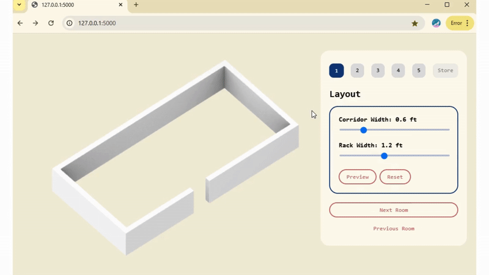
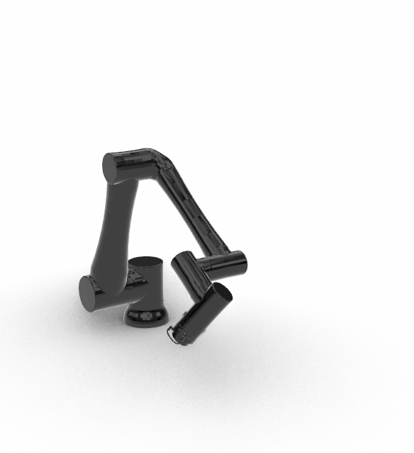
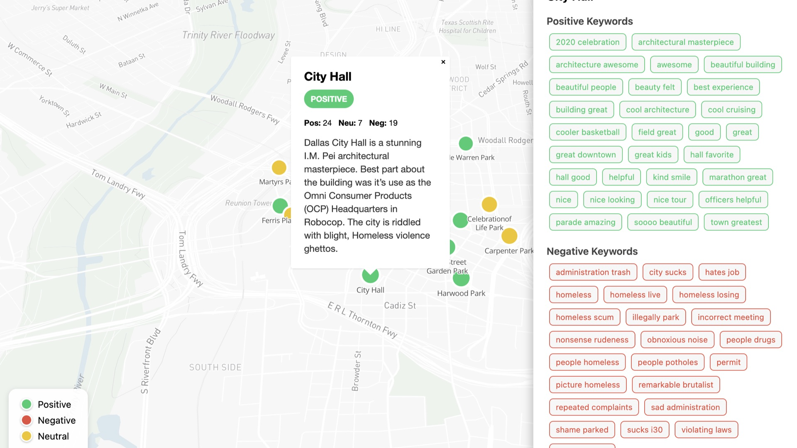
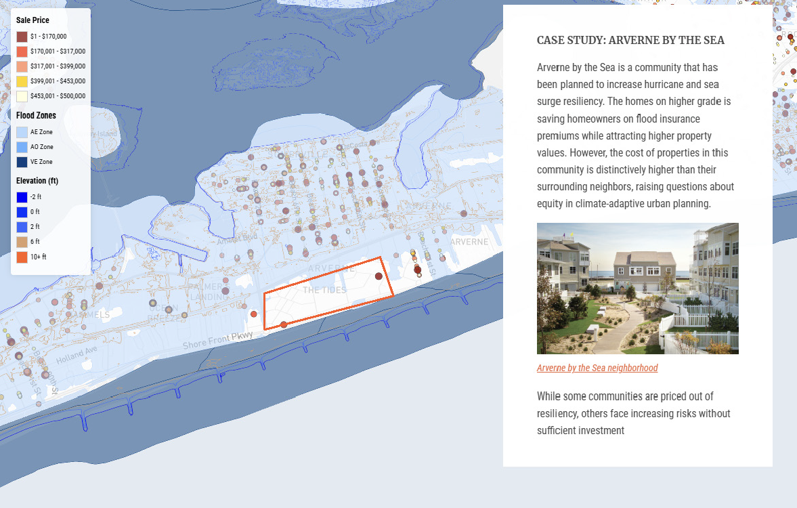
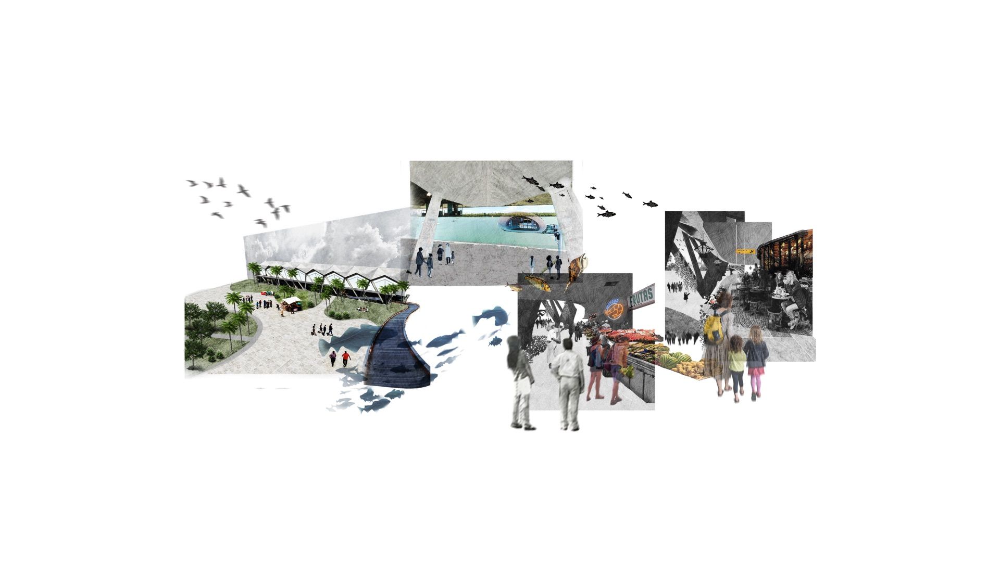
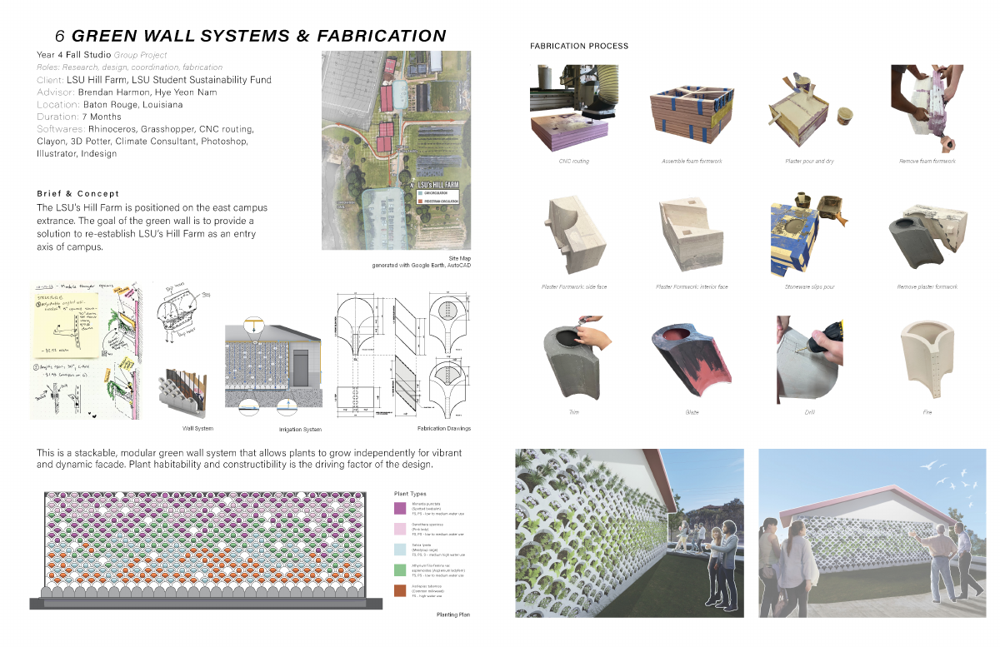
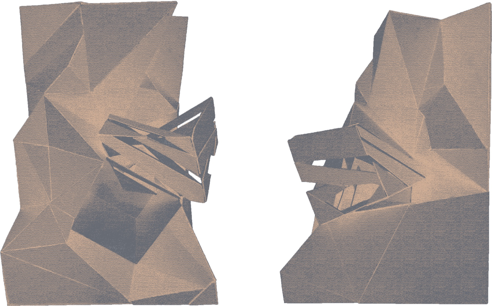

Hi there 👋, I'm Yilin Zheng.
I am a forward deployed computational designer, design engineer, and researcher based in .
My works explore the intersection of emerging technologies, spatial data, product building, and digital-physical systems.
I work to challenge how we interact with physical spaces and our perception of "constructed" and "in-situ" environment. I believe that the essence of technology is by no means purely technological, and should be, about the system it embodies.
Selected Works

SOLARA integrates parametric design, environmental performance, and software-controlled hardware in a kinetic solar facade.
SwiftUIArduinoGrasshopperRhinoFusion 360
Scaled Model Prototype translates SwiftUI inputs into ESP32-controlled servo movement for physical facade testing.
SwiftUIESP32Servo control

BENTO connects location intelligence with parametric store layouts for data-driven retail planning.
GrasshopperMapboxGISPython

BENTO Web UI uses Rhino.Compute to update Grasshopper-generated 3D layouts through a browser interface.
Rhino.ComputeGrasshopperJavaScript
Where the Water Reached combines spatial analysis, housing data, and user research in a public-facing flood-risk decision tool.
GISMapboxPythonWeb UI
User Journey & Mapping translates flood-risk research into an accessible product workflow by mapping user needs and decision points.
User researchFigmaProduct strategy

Standard Bots RO1 Workflow connects Rhino and Grasshopper geometry to ROS2 control, kinematics, and computational fabrication.
GrasshopperPythonROS2REST API

Design Research: Flood Risk and User Perception

Public-Space Review Scraper collects Google Maps reviews and ratings to study public-space experience and sentiment for a Dallas Downtown Masterplan design proposal.
PythonMapboxJavaScriptSentiment segmentation

High-risk areas & people who live there: The tension between affordability, social ties, and long-term risk.
MapboxLeaflet
EXPLORE, EXPLAIN, PROPOSE: Politics of extreme weather events & housing justice.
Computational Spatial Explorations

Terracurve Tower connects parametric design and environmental analysis with a coordinated mixed-use BIM model.
GrasshopperRhinoRevit interoperability

Harborfront Park integrates coastal climate analysis and ecological research into public-space design.
RhinoClimateStudioArcGISLumion

Green Wall Systems & Fabrication connects environmental testing with material prototyping, CNC fabrication, and system assembly.
RhinoGrasshopperCNC routing3D Potter

Form Exploration uses cubic spaces, shadow, and layered openings to study mass, void, and spatial perception.
Physical modelSpatial composition
Housing & Real Estate: Solar-Integrated SFR Investment
Computational Designer / Design Technologist
I build computational tools, automation workflows, and digital-to-physical prototypes for architecture and the built environment.
Core Capabilities
- Computational design: Rhino, Grasshopper, GH-Python, Python, parametric modeling
- AEC systems: BIM interoperability, environmental simulation, geometry standardization, workflow automation
- Data and web: GIS, JavaScript, D3.js, p5.js, HTML/CSS, Jupyter/Colab
- Prototyping: robotics, Arduino/ESP32, sensors and controls, Xcode/SwiftUI, physical fabrication
Experience
HKS Architects | LINE (Laboratory for INtensive Exploration)
June 2025 – Present
Columbia University
May 2025 – June 2025
LSU School of Architecture
December 2022 – May 2024
Wiss, Janney, Elstner Associates, Inc.
June 2023 – August 2023
Leadership
New York City | 2025 – Present
Louisiana State University | June 2023 – May 2024
Louisiana State University | May 2022 – May 2024
Louisiana State University | June 2022 – June 2023
Education
Columbia University | 2024–2025
Louisiana State University | 2019–2024
Recognition
- CleanTech Open 2026 Cohort
- The StartupUNO 2025: First Place
- Columbia University Merit-based Scholarship, 2024–2025
- LSU Distinguished Undergraduate Researcher, 2024
- METROPOLIS Magazine Future100 Undergraduate Honoree, 2024
- ARCC King Medal Award for Excellence in Architectural + Environmental Design Research, 2024